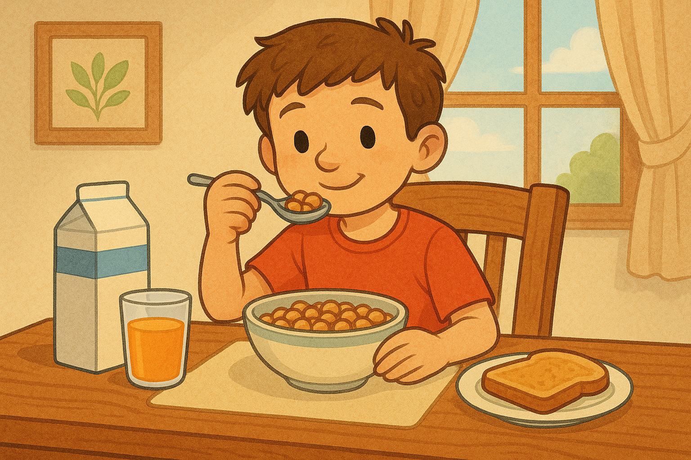
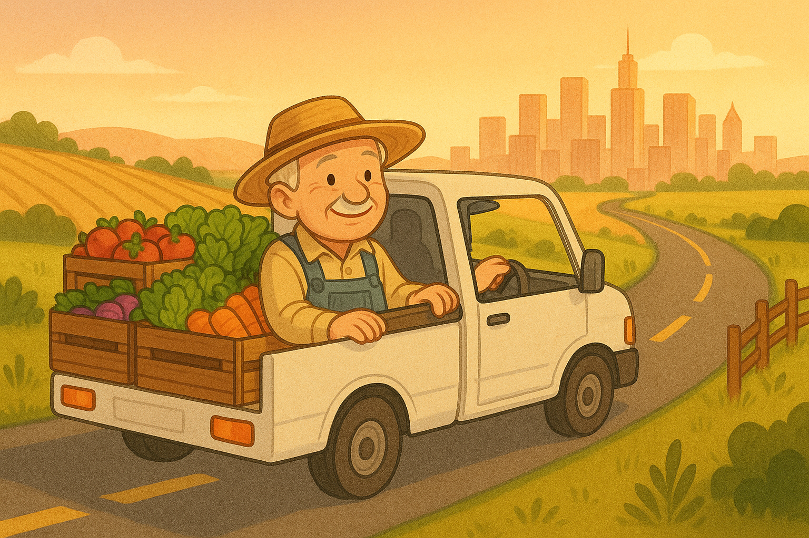
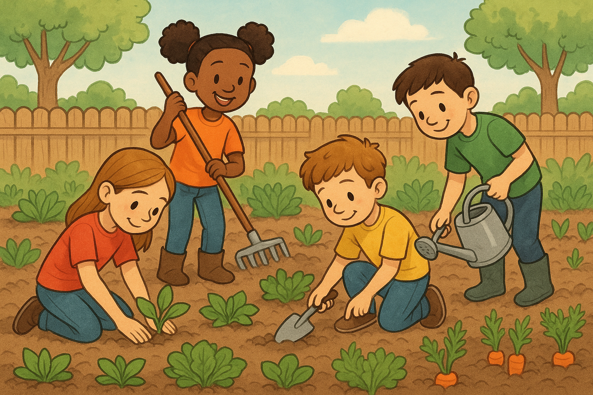

Histórias que celebram os laços entre a zona rural e urbana através da cultura, alimentação, tecnologia e convivência.
O Leite de Dona Maria
Dona Maria acorda todo dia às 5h da manhã para tirar leite das vacas em sua pequena fazenda no interior do Paraná. Com muito carinho, ela cuida dos animais e envia o leite fresco para uma cooperativa, que o processa e distribui para supermercados da cidade. Sem saber, João, um estudante da cidade grande, toma esse mesmo leite todas as manhãs antes de ir para a escola.
O Caminhão de Seu Antônio
Seu Antônio dirige um caminhão há 20 anos. Toda semana, ele sai do sítio onde mora, carregando frutas e verduras fresquinhas colhidas por famílias da região rural. Ele cruza estradas e avenidas até chegar à feira de domingo, no centro da cidade. Lá, moradores urbanos escolhem os alimentos com cuidado, sem imaginar a jornada de cada produto até suas mãos.
A Horta do Colégio
Na escola de Camila, na cidade, os alunos criaram uma horta com a ajuda de um agricultor local, o Sr. José. Ele ensinou como plantar alface, tomate e cenoura, usando técnicas que aprendeu no campo. Agora, os alunos cuidam da horta e servem os próprios vegetais na merenda. Eles dizem que o sabor é ainda melhor quando é plantado com carinho e conexão.
Tecnologia Que Une
Lucas vive no campo e adora mexer no computador. Com a internet, ele aprendeu a usar um aplicativo para monitorar o clima e a umidade do solo, o que ajuda sua família a cuidar melhor da plantação de milho. Ao mesmo tempo, Carla, que mora na cidade, estudou tecnologia na escola e ficou surpresa ao descobrir como o conhecimento digital ajuda na produção de alimentos no campo. Eles se tornaram amigos e trocam ideias pela internet.